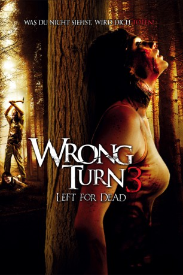
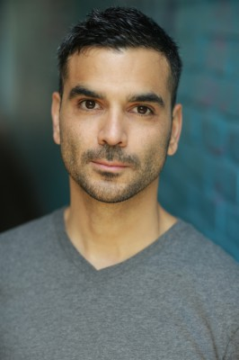
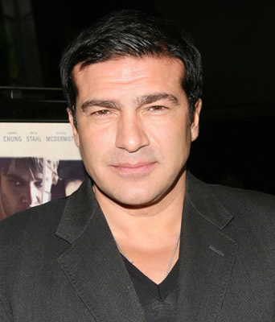
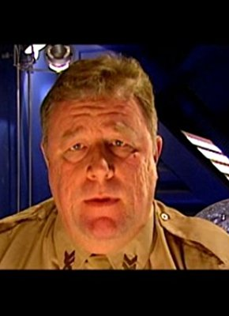

#6940 Wrong Turn 3 - Left for Dead
 
 IMDB-Wertung: 4.6 / 10
IMDB-Wertung: 4.6 / 10  Metascore: 0
Metascore: 0 
Nach den blutigen ersten beiden Teilen des verzweifelten Überlebenskampfes einer Gruppe junger Leute gegen kannibalische Waldbewohner, macht nun "Wrong Turn 3" die Horror-Trilogie perfekt. Diesmal ist es die junge Fonda, die mit ihren Freunden zu einem ausgelassenen Campingurlaub in die Wälder Virginias aufbricht. Kaum dort angekommen, entwickelt sich der Aufenthalt zum blanken Albtraum. Einer nach dem anderen wird vom blutrünstigen Mutanten Three-Fingers abgeschlachtet und gefressen. Während Fonda nur knapp dem Tod entfliehen kann, wird auch ein durchfahrender Gefängnis-Transport in den einsamen Wäldern von Three-Fingers attackiert. Gerade noch rechtzeitig kann sich der Justizvollzugsbeamte Nate Wilson mit einer Gruppe Sträflinge ins Dickicht flüchten. Doch wie weit kann die Gruppe schon kommen, wenn ihr eine blutdürstige, menschenfressende Bestie auf den Fersen ist...?
Jahr: 2009
Dauer: 92 Minuten
FSK: 18
Land: USA Studio: 20th Century Fox Home EntertainmentTonspuren: DTS - ,
Untertitel:
Auflösung: 1080p (1920x1080) Größe: 8939 MB
Genre: Horror
Regisseur: Declan O'Brien
Drehbuch: Connor James Delaney
Soundtrack:
Darsteller:
- Janet Montgomery als Alex
- Gil Kolirin als Floyd
-  Christian Contreras als Willy
 Jake Curran als Crawford
Jake Curran als Crawford- Tom McKay als Brandon
- Charles Venn als Walter
-  Tamer Hassan als Chavez
- Jack Gordon als Trey
- Charley Speed als Brent
- Borislav Iliev als Three Finger
- Emma Clifford als Deputy Ally Lane
- Todd Jensen als U.S. Marshal
- Tom Frederic als Nate
- Louise Cliffe als Sophie
- Borislav Petrov als Three Toes
- Mike Straub als Preslow
- Bill Moody als Sheriff Carver
-  Mac McDonald als Warden Ladew
- Vlado Mihailov als U.S. Marshal Davis
- Tzvetislav Samardjiev als Policeman in Changing Room , uncredited
Datei: X:\FSK18-Collections\Wrong Turn\Wrong Turn 3 - Left for Dead (2009, FSK18, 1920x1080).mkv seit 08.09.2017
Festplatte: FSK18
 Es gibt insgesamt 9 Filme in der Gruppe 'FSK18-Collections\Wrong Turn'
Es gibt insgesamt 9 Filme in der Gruppe 'FSK18-Collections\Wrong Turn'